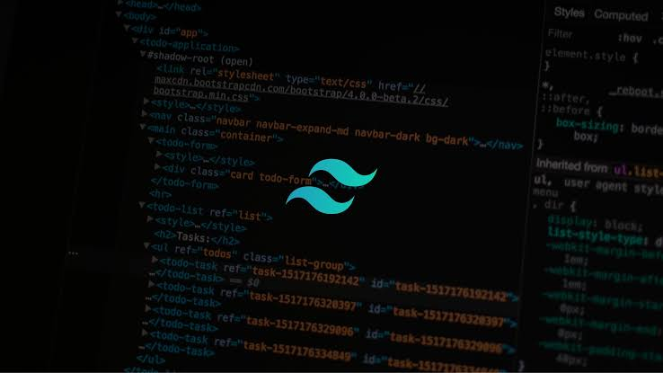
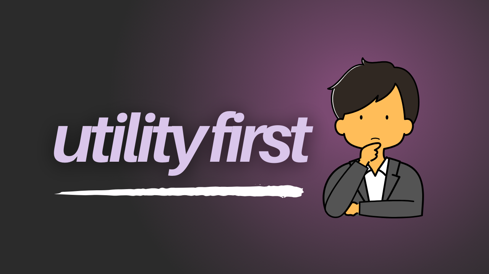
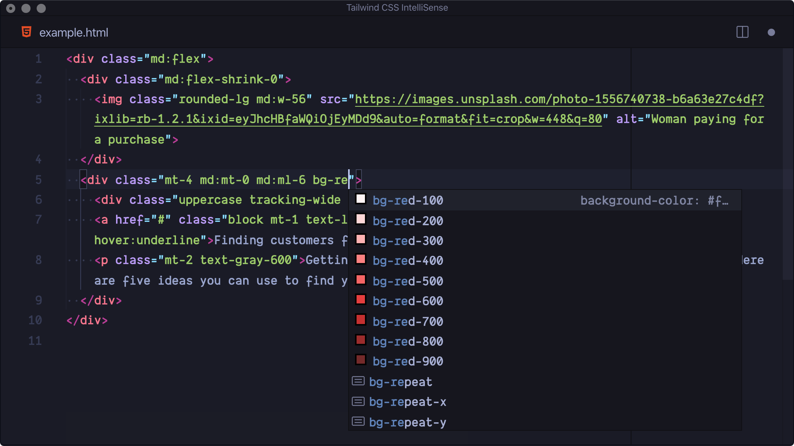
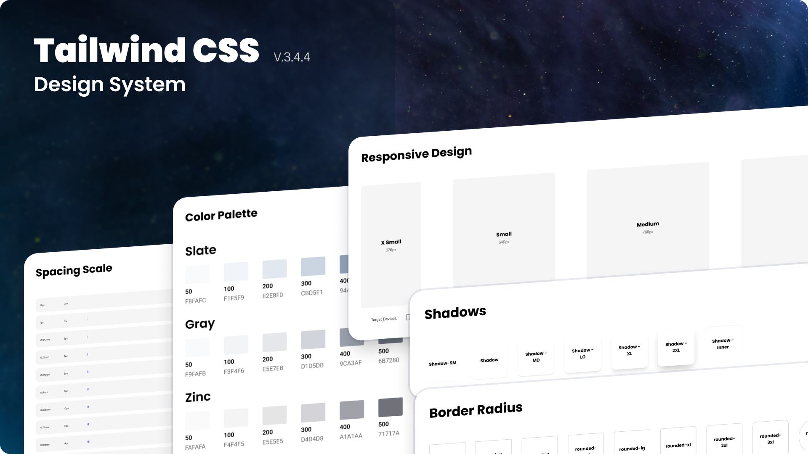

TailwindCSS
"Design moderno. Código ágil. Resultados reais."
 INTRODUÇÃO
INTRODUÇÃO
O Tailwind CSS é um framework CSS utilitário (utility-first) que revolucionou a forma como os desenvolvedores criam interfaces web. Diferente de frameworks tradicionais como Bootstrap ou Bulma — que fornecem componentes prontos como botões e barras de navegação com designs pré-definidos —, o Tailwind oferece classes utilitárias de baixo nível (como flex, pt-4, text-center, bg-blue-500) que permitem construir designs totalmente customizados diretamente no seu código HTML, sem precisar escrever uma única linha de CSS personalizado.

Além da flexibilidade no design, a grande força do Tailwind CSS reside no ganho de produtividade e no desempenho altamente otimizado. Ao construir interfaces diretamente no HTML usando classes utilitárias, você elimina a necessidade constante de alternar entre arquivos de estilo e estrutura, além de evitar o problema recorrente de inventar nomes de classes genéricos ou lidar com regras de CSS cascateadas difíceis de manter. Outro grande diferencial é o seu compilador inteligente: ele analisa todo o projeto antes da publicação e remove automaticamente qualquer estilo que não tenha sido utilizado. O resultado disso é um arquivo CSS final incrivelmente leve, garantindo carregamentos ultra-rápidos, máxima performance em dispositivos móveis e um fluxo de desenvolvimento muito mais ágil e padronizado.
 A HISTÓRIA DO TAILWIND CSS
A HISTÓRIA DO TAILWIND CSS
2017 - O Início
Em 2017, o desenvolvedor Adam Wathan estava cansado de reescrever os mesmos estilos CSS e criar nomes de classes complicados para cada projeto. Trabalhando em aplicações reais com seus colaboradores Steve Schoger e David Hemphill, ele começou a extrair pequenos utilitários reutilizáveis.

2019 - Versão 1.0
Quando o Tailwind CSS v1.0 foi officially lançado em maio de 2019, a comunidade de desenvolvimento reagiu com desconfiança. Muitos diziam que escrever utilitários no HTML parecia "voltar ao CSS inline dos anos 90". No entanto, a abordagem utility-first provou sua eficiência.
2021 - Versão 3.0
Em 2021, o lançamento da versão 3.0 trouxe o mecanismo Just-In-Time (JIT). Em vez de gerar um arquivo CSS gigante com todas as combinações possíveis, o Tailwind passou a compilar os estilos sob demanda, em milissegundos.
Atualmente
Hoje, o Tailwind CSS deixou de ser uma alternativa exótica para se tornar o padrão da indústria. Utilizado por gigantes da tecnologia como Vercel, OpenAI, GitHub e Shopify, ele transformou o fluxo de trabalho no desenvolvimento frontend moderno.
 EVOLUÇÃO
EVOLUÇÃO
Tailwind v1.0
Lançamento da estrutura base utilitária, padronização do sistema de design e consolidação da abordagem utility-first.
Tailwind v2.0
Introdução do suporte nativo ao Modo Escuro, paleta expandida com mais de 200 cores e utilitários de foco.
Tailwind v3.0
Compilação em tempo real por padrão, suporte a valores arbitrários no HTML e arquivos finais ultra leves.
Tailwind v4.0
Novo motor compilado de altíssima velocidade, configuração nativa em CSS e integração simplificada.
Atualmente
Hoje, o Tailwind CSS deixou de ser uma alternativa exótica para se tornar o padrão da indústria no desenvolvimento moderno.
A viralização do Tailwind CSS nos últimos anos é um dos maiores fenômenos do desenvolvimento web moderno, transformando-o de um framework inicialmente desacreditado no padrão absoluto da indústria. Esse sucesso explosivo foi impulsionado fortemente pelo "Efeito Next.js", quando grandes ecossistemas passaram a adotá-lo como a opção nativa de estilização, expondo milhões de desenvolvedores à ferramenta logo no primeiro contato.
 POR QUE USAR?
POR QUE USAR?
O Tailwind CSS redefiniu a criação de interfaces modernas ao entregar produtividade sem precedentes e controle total sobre o design. Unindo performance otimizada a uma experiência de desenvolvimento ágil, ele se tornou a escolha ideal para desenvolvedores independentes e grandes equipes de tecnologia. A seguir, veja os principais motivos para adotar o framework no seu fluxo de trabalho.
Ao estilizar os elementos diretamente no HTML, você elimina a troca constante de arquivos e a fadiga de inventar nomes de classes CSS. O fluxo de trabalho torna-se contínuo, focado e drasticamente mais rápido.

O compilador inteligente analisa todo o seu código e elimina automaticamente qualquer CSS não utilizado. O resultado final é um arquivo incrivelmente leve, garantindo carregamentos instantâneos.
Com escalas de espaçamento, tipografia e paletas de cores pré-configuradas, o Tailwind garante harmonia visual nativa, facilitando a manutenção e a colaboração entre equipes.

A principal diferença entre a estilização tradicional e o Tailwind CSS está no fluxo de trabalho. No modo clássico, é necessário alternar constantemente entre o arquivo HTML e a folha de estilo CSS para criar regras e nomes de classes. Com a abordagem do Tailwind, você constrói elementos totalmente estilizados diretamente na estrutura HTML utilizando utilitários prontos, reduzindo o tempo de desenvolvimento e mantendo o código padronizado.
/* style.css */
.meu-botao {
background-color: #ec4899;
color: #ffffff;
padding: 12px 24px;
border-radius: 8px;
transition: all 0.3s;
}
.meu-botao:hover {
background-color: #be185d;
}<!-- index.html -->
<button class="bg-pink-500
hover:bg-pink-700
text-white
py-3 px-6
rounded-lg
transition-all">
Clique Aqui
</button>Acompanhamento e suporte técnico de código para sua equipe no uso do Tailwind.
Contratar MentoriaCriação ou migração completa de um site legado para a estrutura Tailwind CSS.
Solicitar PropostaPadronização visual e criação de biblioteca de componentes reutilizáveis.
Falar com Consultor